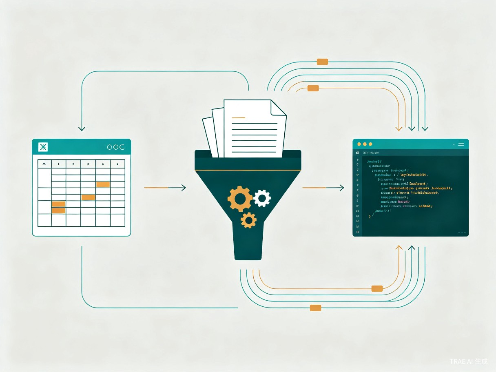

01创意名称与介绍
想解决什么问题？
同人网文创作面临世界观复杂度高、设定一致性难保障、长篇创作效率低下三大痛点。以《诡秘之主》为例，其世界观包含 22 条神之途径、数百个角色、复杂的秘序体系和序列能力，创作者在数万字甚至数十万字的连载过程中，极易出现设定矛盾、角色行为逻辑断裂、伏笔遗忘等问题。
现有 AI 写作工具（如 ChatGPT、Claude 等 Agent 模式）虽然能生成文本，但存在上下文丢失、无法精细修改局部段落、缺乏世界观约束机制等致命缺陷，无法满足严肃文学创作的质量要求。
为什么会想到做这个？
灵感来源于对 TRAE IDE 能力的深度探索。TRAE IDE 的 #skill / #rule 调用机制天然适合构建"世界观知识库"，而其框选局部修改能力远优于 Agent 的"整段重写"模式，恰好弥补了 AI 辅助文学创作中"精度不足"的核心短板。
产品形态
一套基于 TRAE IDE + Excel + Markdown 信息卡体系 的半自动化写作工作流系统，不开发独立应用，而是将现有工具组合为可复用的创作流水线。
02目标用户及痛点
同人网文作者
热爱特定 IP（如诡秘之主、哈利波特等），希望创作高质量同人文，但被复杂世界观和设定一致性困扰。
网文连载作者
需要长期维持数十万字的连载，面临大纲管理混乱、伏笔遗忘、角色弧线断裂等长篇创作难题。
AI 创作探索者
希望利用 AI 提升写作效率，但不满于现有 Agent 模式的"粗放生成"，追求更精细的 AI 辅助创作体验。
核心使用场景
- 1 章节创作：作者在 IDE 中打开单元提示词文件，调用 #skill 加载角色/世界观信息卡，AI 基于严格约束生成 500-1000 字的文学单元。
- 2 局部精修：作者框选生成文本中的特定段落，通过 IDE 的局部修改能力进行语气、节奏、描写的精细打磨。
- 3 设定查询：写作过程中随时通过 #卡片编号 调用信息卡，快速查阅角色档案、势力关系、序列能力等设定细节。
- 4 大纲管理：在 Excel 中维护从大纲到细纲到单元纲的完整创作结构，通过脚本自动生成 IDE 可用的提示词文件。
当前痛点（没有本产品时）
| 痛点维度 | 具体表现 | 影响程度 |
|---|---|---|
| 设定一致性 | AI 生成内容时无法参考完整世界观，导致角色性格、能力描述前后矛盾 | 致命 |
| 局部修改精度 | Agent 模式只能整段重写，无法对特定句子或段落进行精细调整 | 严重 |
| 上下文管理 | 长对话中 AI 丢失早期设定约束，生成质量随对话轮次递减 | 严重 |
| 创作效率 | 纯人工创作日均产出 2000-4000 字，质量与速度难以兼得 | 中等 |
| 大纲执行 | 大纲停留在文档层面，与实际写作脱节，执行偏差大 | 中等 |
03核心架构与工作流
本方案的核心设计理念是"管理"与"执行"分离：Excel 负责管理创作大脑（纲要、信息卡索引、提示词生成），TRAE IDE 负责执行（稳定调用 skill、精细修改文本）。
写作流水线全景
结构化管理
MD 文件知识库
单元提示词 MD
500-1000字/单元
文学打磨

信息卡体系设计
信息卡是整个工作流的知识基石，以 Markdown 文件为载体，一张信息卡对应一个 MD 文件，通过 #卡片编号 的形式在提示词中显式调用。
写作单元粒度设计
| 层级 | 规模 | 说明 |
|---|---|---|
| 章 | 4000–5000 字 | 一个对话窗口 / 一个主文档单元 |
| 单元 | 500–1000 字 | 实际生成的最小执行单位 |
| 单元数 | 5–10 个/章 | 根据情节密度灵活调整 |
04技术实现方案
为什么选择 TRAE IDE 而非 Agent 模式？
IDE 模式（本方案选择）
#skill / #rule 调用稳定，不会在多轮对话中丢失上下文
框选局部修改能力，对文学创作的精细打磨远优于整段重写
一章一个对话窗口，上下文边界清晰可控
支持多文件协同，信息卡与正文并行管理
Agent 模式（未选择）
多轮对话中上下文容易丢失，设定约束逐渐弱化
只能整段重写，无法对特定句子进行精细调整
对话窗口无限延伸，上下文管理困难
单线程交互，无法同时管理多个文件
系统架构
flowchart TB
subgraph 管理层["管理层 — Excel + 脚本"]
A[大纲 Excel] --> B[细纲 Excel]
B --> C[单元纲 Excel]
C --> D[脚本生成器]
end
subgraph 知识层["知识层 — Markdown 信息卡"]
E[P系列 角色档案]
F[F系列 势力组织]
G[S系列 秘序途径]
H[W系列 世界观规则]
end
subgraph 执行层["执行层 — TRAE IDE"]
D --> I[单元提示词 MD]
E --> I
F --> I
G --> I
H --> I
I --> J[AI 文本生成]
J --> K[局部精修]
K --> L[章节成品]
end
style 管理层 fill:#1a1a24,stroke:#d4a853,color:#e8e6e3
style 知识层 fill:#1a1a24,stroke:#7b68ee,color:#e8e6e3
style 执行层 fill:#1a1a24,stroke:#d4a853,color:#e8e6e3
关键技术点
- K1 上下文控制策略：一章一个对话窗口，每个单元提示词包含前情提要 + 当前情节 + 相关信息卡引用，上下文范围精确可控。
- K2 信息卡调用机制：通过 #P04 #P05 #PB01 等 skill 指令在提示词中显式调用，确保 AI 始终在正确的世界观约束下生成内容。
- K3 提示词自动生成：Excel 单元纲通过脚本自动填充到 MD 模板中，生成包含写作指令、情节概要、信息卡引用的完整提示词文件。
- K4 增量写作流：每个单元完成后，自动提取关键情节写入 JSON，作为下一单元的前情提要，实现连贯的叙事流。
05价值与意义
效率提升价值
通过 AI 辅助生成 + 精修模式，预计可将日均创作产出从 2000-4000 字提升至 8000-15000 字，同时保持甚至提升文学质量。
信息卡体系消除了反复查阅设定资料的时间成本，让作者专注于创意本身。
创作质量保障
严格的世界观约束机制从根本上解决了同人创作中"设定崩坏"的核心难题。
模块化的单元设计使每个段落都经过独立的质量把控，整体作品一致性远超传统创作方式。
方法论价值
本方案验证了一种"IDE + 知识库 + 流水线"的 AI 辅助创作范式，可迁移至任何复杂世界观 IP 的同人创作或原创网文创作。
为 AI 辅助文学创作提供了可复用的工程化方法论，而非简单的"让 AI 写故事"。
社区生态价值
信息卡体系可由社区协作维护，形成开放的世界观知识库，降低新作者的创作门槛。
标准化的写作单元格式便于作品间的质量对比和经验分享。
06项目规划
| 阶段 | 目标 | 关键交付物 |
|---|---|---|
| Phase 1 基础搭建 |
建立信息卡体系 + 基础写作流 | 核心角色信息卡 20+ 张 单元提示词模板 首章试写验证 |
| Phase 2 流水线自动化 |
Excel→提示词脚本 + 上下文管理 | 自动化脚本 上下文控制策略 前情提要自动生成 |
| Phase 3 规模创作 |
完成完整章节的流水线创作 | 3-5 章完整成品 质量评估报告 工作流优化文档 |
| Phase 4 开放共享 |
方法论提炼 + 社区共享 | 完整工作流文档 信息卡模板库 创作指南 |
07总结
这不是"让 AI 替你写小说"，而是"让 AI 成为你的创作助手"——作者保留对故事走向、角色命运、文学风格的完全掌控权，AI 负责在严格约束下高效执行每一个创作单元。
我们相信，这种"人机协作、流水线生产、知识库驱动"的模式，将成为 AI 时代文学创作的新范式。